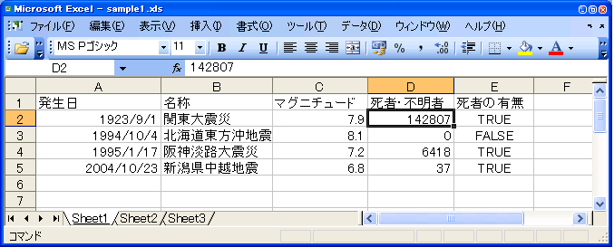

Win32OLE 活用法 【第 2 回】 Excel
書いた人：cuzic
プロローグ
あなたは、メールボックスに溜まった Excel ファイル添付付きのメールを 見ていて、長い間うんざりとした気分を味わってきました。
「どうして、こんな単純な作業を俺がやらないといけないんだっ。」
「これくらい機械でもできるはずだっ」
あなたは、Excel ファイルの解析を自動的にできるようにする スクリプトを作成する決意を固めました。
そして、思いました。
「いったい、どうすれば楽に Excel ファイルを扱えるんだろう？」
はじめに
Excel を使ってのうんざりするような作業っていろいろありますよね。
Excel でデータを渡されて、それを使って行う一連の作業があるような 場合とか。 他に、何がしかのログとかデータが別にあって、それを整形したり 解析した結果を、お客さまや上司の指定で Excel で出力する 必要がある場合もあります。
私たちが今回学ぶ内容は、このような業務で適用できる事柄に なります。 私たちは、今回、Excel ファイルに含まれるデータを Ruby から 扱う方法と Ruby で Excel ファイルを作成する方法について学びます。
今回の目的
これから私たちは次の内容について学びます。
- Excel のオブジェクトモデルの概略
- Excel ファイルのパース
- Excel ファイルの自動作成
- Excel を操作するのによく使うクラスやモジュールのリスト
Excel は、前回に説明した COM という技術を用いて、 外部のプログラムから利用できる形で、 部品となる COM オブジェクトを提供しています。
Ruby から Excel を操作するにはこれらのオブジェクトと その関連を知らなければいけません。 したがって、最初に Excel のオブジェクトモデルに ついて簡単に説明します。
その次に、今回の記事のメインである Excel ファイルをパースする 方法について説明します。 ここでは、パースする方法をいくつかに分類して、それぞれどういう 状況で適用できるのかについて説明します。 具体的にパースを行うスクリプトを紹介しながら、既存の Excel の ファイルを、 Ruby で扱えるように読み取っていくときのコツを 共有していきたいと思います。
Excel ファイルの自動作成については、 Excel の特定のセルを変更していく処理について 簡単に説明します。
Excel のオブジェクトモデル
Excel のオブジェクトの中で重要なものは４つあります。
- Application オブジェクト
- Workbook オブジェクト
- Worksheet オブジェクト
- Range オブジェクト

Application オブジェクトは Excel のアプリケーション自身を 表現します。実行しているアプリケーションに関する情報を提供します。
Workbook オブジェクトは Excel アプリケーションで開かれている 特定のブックを表現します。
Worksheet オブジェクトは、ブックの中の一枚のシートを表します。
Range オブジェクトは Excel を利用するときに最も頻繁に利用する オブジェクトです。 Range オブジェクトはセル、行、列、１つ以上のセルのブロックを含む 範囲、さらには複数のセルにまたがるグループを表現します。 目的の範囲を Range オブジェクトとして取得することでその値や、 境界線、書式などを取得、変更できます。
Application オブジェクトは、Excel ブックを表現する Workbook オブジェクトを１個以上所有します。 そして、Workbook オブジェクトは １個以上の Worksheet オブジェクトを所有します。 そして、Worksheet オブジェクトのの中にある任意の範囲は、 Range オブジェクトを使用して表現されることになります。
この所有関係が Excel のオブジェクトモデルの基本になります。
正確には Chart というグラフを表現するオブジェクトも含めて 考える必要があるので、この理解は正確ではありません。 しかしながらワークシートのみを扱う場合はこれで充分です。
Excel を操作するときはこの関係を念頭におくと分かりやすく なります。
Excel ファイルのパース
ここまでで、Excel のオブジェクトモデルの概略を理解できました。
これから私たちは、Excel ファイルを実際に扱っていく方法について 学んでいきます。
この章では特に、 既存の Excel ファイルを Ruby でパースする 方法について学びます。
Excel ファイルの全データを出力
この節では、Excel ファイルに含まれる全シートの全セルの値を 出力するスクリプトについて説明します。
私たちは次のことについて学びます。
- ファイルの絶対パスの取得方法
- Excel ファイルの開き方
- 全ワークシートに対して処理を行う方法
- 全行、全列に対して処理を行う方法
- ブックの閉じ方、始め処理、終わり処理のイディオム
- セルの値の取得の仕方
- Excel のセルの型と Ruby の型の関係
それでは、まずはスクリプトを見てみましょう。このプログラムを実行するのに 必要なファイルはもう少し後に出てきますので、実行するのはちょっと待ってください。

このスクリプトでは、Excel 表のデータを Ruby で扱えるように読み出しています。 これを本稿では「パースする」と言います。
これだけのスクリプトでも説明すべきことはいろいろとあります。
本稿の最後によく使うクラスとメソッドの簡単な説明も 書きますので、そちらも参照してください。
def getAbsolutePath filename
fso = WIN32OLE.new('Scripting.FileSystemObject')
return fso.GetAbsolutePathName(filename)
end
filename = getAbsolutePath("sample1.xls")順番が前後しますが、後に使う Workbooks オブジェクトの Open メソッドでは Excel ファイルの Windows での絶対パスを 渡す必要があります。
Win32 ネイティブ版の Ruby であれば簡単に File::expand_path メソッドを 用いて絶対パスを取得できます。 しかしながら、Cygwin 版であればこれで得られるのは UNIX 形式の 絶対パスとなります。
ここでは Win32 ネイティブ版、Cygwin版の違いに関わらず絶対パスを取得する 方法として、Scripting.FileSystemObject という COM コンポーネントを 使っています。 Scripting.FileSystemObject の GetAbsolutePathName メソッドを使うことで ファイルの絶対パスを取得することができます。
このようにすることで、カレントディレクトリにある Excel ファイルの 絶対パスを、Win32 ネイティブ版、Cygwin 版に関わりなく取得できます。
そして、ここで得た絶対パスは変数 filename に代入しています。
xl = WIN32OLE.new('Excel.Application')という行で Excel.Application の COM オブジェクトを作成しています。 先ほど説明した Application オブジェクトが xl になります。
book = xl.Workbooks.Open(filename)という行で、先ほど得た filename の Excel ファイルを開きます。
Application オブジェクト xl の Workbooks は読み取り専用のプロパティです。 プロパティというのは、COM の用語の１つです。 構文上はパブリック変数のように扱えるメソッドの一種のことを プロパティと呼びます。 Ruby でいうと、読み取り専用のプロパティというのは attr_reader で 作るメソッド、読み取りも書き込みも可能なプロパティというのは attr_accessor で作るメソッドに対応します。
Workbooks オブジェクトが持つ Open メソッドで、 既存の Excel ファイルを開くことができます。 このとき、開いた Workbook をオブジェクトを返します。 なお、新規に Excel ファイルを作成する場合は Workbooks オブジェクト の Add メソッドを用います。
book.Worksheets.each do |sheet|
...
endと書くことで、開いたブックのすべての Worksheet に対して 同じように処理させることができます。
COM オブジェクトには名前付け規則があり、 「〜s」というプロパティは「s」をとった COM オブジェクトの コレクションオブジェクトとなることが多いです。 ここではコレクションオブジェクトというのは、簡単に Win32OLE で each メソッドが使えるようなオブジェクトという 理解をしていてください。 ここでは、ブロック引数として渡されている sheet は、 Worksheet オブジェクトになります。
sheet.UsedRange.Rows.each do |row|
record = []
row.Columns.each do |cell|
record << cell.Value
end
puts record.join(",")
endここが出力を行う箇所になります。 Worksheet の UsedRange というプロパティは、 そのワークシートで使われているセルの範囲を返します。 これは Range オブジェクトになります。
先ほども説明したように Range オブジェクトは Excel の操作に関して 最も頻繁に用いる COM オブジェクトです。
このブロックでは Range オブジェクトの Rows プロパティ、 Columns プロパティ、Value プロパティを用いています。
sheet.UsedRange.Rows.each do |row|
...
endと書くことで、ワークシートの使用している範囲を一行ごとに 取り出して順に処理させることができます。 ここで、 row は一行分の範囲を表現する Range オブジェクトと なります。
row.Columns.each do |cell|
record << cell.Value
endRange オブジェクトの Rows プロパティがその Range オブジェクトが表現する 範囲の一行ずつに対応したのに対して、Columns プロパティは 一列分のセルに対応します。
ここで、一行分の範囲の一列分というのは、結局セル１つに対応します。
そして、そのセルの値を取得するために Value プロパティを 利用しています。
record が一行分の一連のデータを格納する配列で、そこに 順にデータを追加しています。 そして、その後 Array#join メソッドを用いてカンマ区切りで 文字列の連結を行っています。
xl.Workbooks.Close最後に Workbooks オブジェクトの Close メソッドで開いている すべてのブックを閉じています。 そのブックだけを閉じたい場合は、
book.Closeと実行しましょう。
xl.Quitさらに Application オブジェクトの Quit メソッドを実行すると Excel アプリケーションそのものを終了することができます。
Workbooks オブジェクトの Close メソッドと Application オブジェクトの Quit メソッド終了時に呼び出すのは 良い習慣です。
前回紹介しました Internet Explorer を起動するスクリプトの ようにアプリケーションを起動することが目的の場合は、 起動したアプリケーションを終了する必要はありません。 しかしながら今回紹介するスクリプトのような場合は、 Excel を起動した状態でスクリプトを終了するのは 望ましい動作ではありません。 Application オブジェクトの Quit メソッドを起動して、 Excel アプリケーションを終了するようにしましょう。
終わり処理（後始末）を書かないようなスクリプトを実行した場合は タスクマネージャを起動すると、Excel がプロセスに 残っていることを確認できるでしょう。 正しく終わり処理を書けばこのような問題は起こりません。
必ず終わり処理を行わせるためには、このスクリプトのように
... # 始め処理
begin
... # 行いたい処理
ensure
... # 終わり処理
endと書くことがよくあります。
これは、始め処理に対応する終わり処理がある場合に よく使われるイディオムです。 また、途中で例外が発生した場合でも、終わり処理が必ず実行 されるため、安心できます。
説明が延々と長くなってしまいまして、すいません。 話を戻します。
ここで、先ほどのスクリプトをサンプルのエクセルファイルに 対して実行してみましょう。
ここでは、次の Excel ファイルをサンプルとして利用します。
sample1.xls 
20世紀の大きな地震の履歴を書いた Excel ファイルです。 このスクリプトを実行するときは、添付する Excel ファイルを カレントディレクトリに置いてください。
すると、以下の結果が得られます。
1923/09/01 00:00:00,関東大震災,7.9,142807.0,true
1994/10/04 00:00:00,北海道東方沖地震,8.1,0.0,false
1995/01/17 00:00:00,阪神淡路大震災,7.2,6418.0,true
2004/10/23 00:00:00,新潟県中越地震,6.8,37.0,trueあれれ。少し変ですね。 そのまま考えれば、次のように出力されるような気がします。
1923/09/01,関東大震災,7.9,142807,TRUE
1994/10/04,北海道東方沖地震,8.1,0,FALSE
1995/01/17,阪神淡路大震災,7.2,6418,TRUE
2004/10/23,新潟県中越地震,6.8,37,TRUEたとえば、Excel 表では、発生日のところ、「1923/09/01」と 入力されているところ、出力されたデータは 「1923/09/01 00:00:00」となっています。 他にも 「死者・不明者」のところが Excel では 整数のところが、「14287.0」のように最後に小数点付き で出力されています。
どうして、このような結果になったのでしょう？
実は、セルには内部的に表現されている型があります。 もう少し説明すると、セルの値は Variant という COM の型で 表現されており、 Variant 型の中でもそれが どのような Variant 型かという区別があるのです。
Win32OLE はこの型を適切に Ruby の型へと変換します。
具体的には Excel での型は次のように Ruby の型に変換されます。
| Excelでの型 | Rubyの型 |
| 文字列 | String |
| 数値 | Float |
| 日付 | YYYY/mm/dd HH:MM:SS形式の String |
| Boolean | true もしくは false |
日付型が YYYY/mm/dd 形式の文字列となる理由は、Ruby の Time クラスで表現できる値と、Excel で表現できる日付型の 範囲が異なっているからです。 Ruby の Time クラスは、1901年12月14日から2038年1月19日まで しか表現できません。 それと違って、Excel での日付型は 100年１月１日から 9999年1月1日となっています。
このような問題があるため、日付型は Ruby の文字列型として 変換する形になっています。 この文字列を Ruby の Time クラスに変換するのはプログラマの 責任になっています。
この文字列を Ruby の Time クラスに変換することを考慮して、 さきほどのスクリプトを書き換えてみましょう。
そうするには、 record という配列に追加しているところを 次のように変更します。
if cell.Value.is_a?(String) &&
cell.Value =~ %r(\d\d\d\d/\d\d/\d\d \d\d:\d\d:\d\d)
begin
record << Time.mktime(*cell.Value.split(%r([:/])))
rescue ArgumentError => e
STDERR.puts e.inspect
end
else
record << cell.Value
end%r() は知っていると思いますが、正規表現リテラルを作るための別記法です。 Time.mktime メソッドは、
Time::mktime( year, mon, day, hour, min, sec)の形式の引数をとるメソッドです。 引数で指定された時刻を表現する Time オブジェクトを返します。*array の表現は、最後の引数の直前に * がついている場合は、その 最後の引数の値が展開されて、引数として渡されるという Ruby の 文法上のルールを利用しています。
なお、Time::mktime メソッドは Ruby の Time 型に変換できない場合に ArgumentError の例外を raise します。 実際にプログラムを書くときはこの例外を捕捉するように書きましょう。
Excel ファイルのタイプごとのパース
与えられた Excel ファイルのセルの内容をすべて出力する方法は これで分かりました。
単純な形式の Excel のファイルをパースする場合なら、これでも 充分かもしれません。
しかしながら、Excel ファイルの中にあるデータを取り出せるように なったとして、データが何についてのデータなのかはどうやって 分かるのでしょう？
Excel ファイルに含まれる値を取り出すことができたとしてもそれが 何の値かが分からなければ意味がありません。
日常的に業務で流れてくる Excel ファイルというのは、 なかなかそう単純な形式ではないものですよね。 人間が目で見れば分かるけれども、コンピュータで処理しにくいような形式であったり します。
本稿では、あるデータがどういうデータなのかを調べる方法として、 次の３つの方法について紹介します。
- カラムが決まればどのような値かが決まる場合
- 同一カラムの上の方に、見出しがあり、見出しの文字列からどのような値かが決まる場合
- 境界線から、見出しの位置が導かれ、そのセルがどのような値かが決まる場合
これから、これらの場合について順に学んでいきます。
カラムが決まればどのような値かが決まる場合
きれいなマトリックスで書かれているような Excel ファイルは 比較的簡単にパースできます。 そうでなくても、列が決まれば、そのセルが何についての情報が格納されている かが決まるような場合には、それに基づいてスクリプトを書けば Excel ファイルをパースしていけます。
この場合は、簡単にパースするスクリプトを書くことができます。
この節では次の項目について説明します。
- Worksheet の中で特定の行、列の値を取得する方法
- module および Object#extendの利用
- 複数引数の [] メソッドの定義
- アクティブなオブジェクトの簡単な参照方法
次のスクリプトは、さきほどのサンプルの Excel ファイルをこのパターンで パースしていきます。

上記スクリプトは、まず Worksheet モジュールをあらかじめ定義しています。
module Worksheet
def [] y,x
self.Cells.Item(y,x).Value
end
endWorksheet オブジェクトの sheet.Cells.Item(y,x).Value という一連の 呼び出しで、y 番目の行で x 番目の列に対応するセルの値を 取得できます。最初の行は、１番目で、１から順に数え上げます。 なお、あまり知られていないかもしれませんが Ruby では [] メソッドに 対して、複数の引数を指定できます。
sheet = book.Worksheets.Item("Sheet1")という行は、Work オブジェクトのプロパティメソッド Worksheets を用いて、 Worksheets コレクションを取得しています。 そして、 “Sheet1” に対応する Worksheet オブジェクトを取得しています。
なお、参考までにここでは代わりに
sheet = xl.Worksheets.Item("Sheet1")と書くこともできます。試してみてください。
Application オブジェクトの Worksheets プロパティを使うと アクティブな Workbook のオブジェクトの Worksheets プロパティ と同じオブジェクトを返します。 こういうアクティブなオブジェクトのプロパティを操作できるようにする ショートカットは、Office アプリケーションオブジェクトモデルでは しばしば提供されます。
Workbooks オブジェクトの Open メソッドを用いると 既存のブックを開き、その Workbook オブジェクトを返します。 このとき、その Workbook オブジェクトを ActiveWorkbook と なるため、xl.Worksheets と書いてもうまく動作するわけです。 これについての詳細は、 エクセレントな Office の冒険 を参照してください。
話を戻します。一般にコレクションでは、 Item メソッドで特定のオブジェクトを取得できます。 ここでは、 Worksheets がコレクションで、Sheet1 という名前の ワークシートを book.Worksheets.Item(“Sheet1”) で取得しています。
このスクリプトでは、明示的に範囲指定を行っています。 2.upto(5) や 1.upto(5) などといった箇所です。 このやり方は、自分で制御しやすい書き方です。 先ほど紹介しました UsedRange を用いる方法とどちらが良いかは 状況によって異なります。 明示的に範囲指定を行うことが容易である場合はこの方法を 使用すると良いでしょう。
このスクリプトは 1 行目に見出しがあることを前提としています。
title = sheet[1,x]そして、その見出しを title に代入しています。 このように ある行に見出しがあることを前提とできることは多いでしょう。
これをキーとして、ハッシュへと代入させています。 今回はたまたまある行に見出しがあることを前提として title を取得させて いますが、そうではない場合もあります。 このときは、行番号と見出しとの対応表をあらかじめ Ruby のソースコード中に 持たせて、見出しに対応する行を探す方法もあります。 その方法について簡単に次の節で紹介します。
これからパースしようとする Excel 表を見ながら工夫しつつ、アプローチを 考えていきましょう。
出力のところでは、Enumerable#map や Enumerable#join を使って、簡潔に 書いています。
recordset.each do |record|
puts record.map{|title,value|
"#{title}=#{value}"
}.join(",")
endHash#map は、Enumerable モジュールで定義されている map メソッドを 呼び出します。 Enumerable#map メソッドは each と同じ引数をとり、要素に対してブロックを 評価した結果を配列で返します。 そして、Array#join メソッドによって、Hash の内容を “,” でつなげています。
このような配列演算は最初は慣れないかもしれませんが、 簡潔に書けるという利点があります。 私は好きです。
見出しを使ったパース
何列目のセルかということで、何のデータが含まれているかを決定できれば 先ほどのやり方でよいですが、そう簡単な Excel ファイルばかりでは ありません。
例えば、１枚のワークシートに複数のテーブルがあって、 同一の列が複数の使われ方をしている場合もあります。 １枚のワークシートに複数の同じ形式の表があって、 それぞれに対して、何列目かを列挙することが面倒な場合もあるでしょう。
このような場合は、たとえばあるセルから、同一カラムで何行か上の セルに見出しがあるので、この見出しの文字列をパースするときに 利用したいということもあるでしょう。
この場合は、見出しの文字列をあらかじめ配列に入れておき、 そのセルを起点に何行か上にマッチする見出しがあるかどうかを 探索することで、パースするというやり方があります。
同じように先ほどの sample1.xls を使えば次のようなスクリプト になります。

このスクリプトの重要な部分は titles への代入と getTitle メソッドです。 そして、始め処理終わり処理のイディオムを yield を使うメソッドで 実現する方法も学びます。
titles = ["発生日","名称","マグニチュード","死者・不明者","死者の有無"]で、見出しの配列をあらかじめ、 titles に代入しています。
そして Worksheet モジュールで定義された getTitle というメソッドを 使って、そのセルが何に使われているかを特定しています。
def getTitle(x,y,titles)
while y > 0
v = self[y,x]
if titles.include?(v)
return v
end
y -= 1
end
return nil
endgetTitle というメソッドでは、そのセルの位置から順に上へと 見出しとなりうる値があるのかどうかを調べています。 これは、今回単純に１つずつ順に上へと調べているので、行数が増えると どんどん時間がかかることになっています。 工夫の余地があります。
あなたの手元の Excel ファイルを見ながら、改良して使ってください。
このスクリプトではもう１つ新しい要素があります。 始め処理終わり処理のイディオムを yield を使った メソッドとして抜き出しているという点です。 このスクリプトでは今までそのまま書き下ろしていた、 ワークブックを開き、終了する動作を別のメソッドで定義しています。
def openExcelWorkbook filename
filename = getAbsolutePath(filename)
xl = WIN32OLE.new('Excel.Application')
book = xl.Workbooks.Open(filename)
begin
yield book
ensure
xl.Workbooks.Close
xl.Quit
end
endこのようにすることで、始め処理と終わり処理を 近い位置に書くことができます。 始め処理と終わり処理は互いに関連しています。 その２つが近い位置にあると見通しが良い 分かりやすくスクリプトになります。
始め処理を行ったのちに必ずある終わり処理を行わなければ いけない状況というのは、多いものです。 このテクニックは応用範囲が広く覚える価値があります。
境界線を元にセルの情報を取得
境界線がテーブルの情報を取得するのに、非常に大事な場合も あります。
きれいな Excel ファイルであれば上記の方法でパースできると 思います。 しかし場合によっては、Excel 表の境界線の罫線の種別が 何かということをヒントにしてスクリプトを書くと、 楽に書ける場合があります。
このような場合は、えてして非常に非定型な形式となります。 そのため、具体的な場合については説明することは ここではしません。
そこで、この節では一般的な境界線の種別を得る方法を中心に 学んでいきます。 この節で学ぶ内容は次のとおりです。
- A1,B2 といった形式でセルの Range オブジェクトを取得する方法
- COM コンポーネントで定義された定数をロードする方法
- Win32OLE での COM コンポーネントの定数の命名規則
- モジュールに定義された定数を取得する方法
-
= という初期化時のイディオム - %w() リテラルによる文字列配列の生成
このスクリプトは、あるセルを囲む境界線の線種や線の太さに対応する 定数名を返します。

このスクリプトでは Worksheet オブジェクトの Range メソッドで セルの値を取得しています。
cell = sheet.Range("B2")この B2 といった記法は Excel ファイルの扱いに慣れた方であれば すぐに分かるでしょう。 ２列目２行目のセルを表現する Range オブジェクトを取得しています。
境界線について調べるには Border オブジェクトを使用します。 Border オブジェクトを取得するには、Range オブジェクトの Borders プロパティによって取得できるコレクションオブジェクト を使います。
borders = cell.Borders border = borders.Item(index)Borders オブジェクトはセルの上下左右の境界線を表現する Border オブジェクトを格納するコレクションオブジェクトです。
セルを囲むどの境界線を取り出すかは Borders オブジェクトの Item メソッドに何を引数として渡すかで決まります。
そして、線種や線の太さを調べるには、Border オブジェクトの LineStyle プロパティや Weight プロパティを使用します。
LineStyle プロパティの値によってその境界線の線種が分かり、 Weight プロパティによって線の太さが分かります。 それぞれの線種ごとに定数が割り当てられていますので、 その定数をスクリプト中に直接書くことによって線種や線の太さを 調べることもできます。 定数の値は、オブジェクトブラウザを使えば、簡単に 調べることができます。
しかしながら、通常はもっと良い方法があります。 COM コンポーネントで定義された定数を利用する方法です。 Excel のような Office アプリケーションではさまざまな用途で 定数が使われています。
COM コンポーネントで定義された定数を使うことで、より 分かりやすいプログラムを書くことができます。
この COM コンポーネントで定義された定数を Ruby のクラスや モジュールにロードするために WIN32OLE::const_load メソッドを使います。
WIN32OLE.const_load(borders,Border)この行で Border モジュールに borders という COM オブジェクトで 使われている定数がロードされます。
今回のスクリプトでは、セルの中でどの境界線を取り出すかを指定するとき や、そして境界線の線種や線の太さを区別するために定数をロードしています。
例えば、セルの周りのどの境界線かを区別するための定数の名前と値は 次のようになります。この値はオブジェクトブラウザを使うことで 確認できます。
| 定数名 | 説明 | 値 |
| xlEdgeLeft | 左の境界線 | 7 |
| xlEdgeTop | 上の境界線 | 8 |
| xlEdgeBottom | 下の境界線 | 9 |
| xlEdgeRight | 右の境界線 | 10 |
ここで定数名がすべて小文字から始まっています。 Ruby で定義される定数は Ruby の文法上 大文字から始まります。 そのため、COM コンポーネントで定義された定数名の最初の文字が 小文字の場合は、そのままでは Ruby の定数とできません。
この制限があるため、Win32OLEではある工夫をしています。 定数名の最初の文字を大文字にしているのです。
たとえば、COM コンポーネントで “xlEdgeTop” という変数は、 “XlEdgeTop” という変数名になります。
WIN32OLE.const_load(borders,Border)WIN32OLE::const_load メソッドの第二引数は モジュール/クラス になります。 Ruby は動的なプログラミング言語で、実行中にモジュールに 定数の定義を追加することもできるという特徴があります。 この特徴を利用して、ここでは Border というモジュールに定数の定義 を追加しています。
このようにロードした定数は、普通の Ruby の定数と同じように
Border::XlEdgeTopなどという形で使えます。
こうして得られた定数を使って、境界線ごとにその境界線の 線種や線の太さを調べるのがさきほどのスクリプトとなります。
この節の最後に linetype メソッドで使っているテクニックについて 簡単に説明します。
@@linestyles ||= nilという行は、 @@linestyles が未定義か偽ならば nil を代入しています。 初期化時のイディオムとしてよく使われるテクニックです。
%w(XlContinuous XlDash XlDashDot
XlDashDotDot XlDot XlDouble
XlLineStyleNone XlSlantDashDot).each do |linestyle|%w() は文字列配列を作るためのリテラル記法のひとつです。
v = Border.const_get(linestyle)Module#const_get メソッドを使うと、そのモジュールで定義された 定数を取得できます。
入力サンプルとして使用した Excel ファイルは次のものです。

カレントディレクトリに sample2.xls を置いて、このスクリプトを実行 してください。 このスクリプトの実行結果は次のようになります。
上 XlContinuous XlThin
右 XlContinuous XlThin
下 XlContinuous XlThin
左 XlContinuous XlThin取得するセルを変えながらいろいろと実験してみてください。
連結セルの扱い
ここまで、取り上げてきませんでしたが、Excel のセルの中には 複数のセルを結合させたものがあります。
結合されたセルの場合は、値を取得するときに工夫が必要です。
下記のスクリプトは、今まで利用してきた Worksheet モジュールを 連結セルの値を取得するように改変したサンプルです。

このスクリプトで重要なのは、下記の箇所です。
def [] y,x
cell = self.Cells.Item(y,x)
if cell.MergeCells
cell.MergeArea.Item(1,1).Value
else
cell.Value
end
endRange オブジェクトの MergeCells プロパティは そのセルが 結合されていれば true を、結合されていなければ、false を返します。
Range オブジェクトの MergeArea プロパティは、セルが結合 されている場合、そのセルを含む結合範囲の Range オブジェクトを 返します。
結合されたセルを表現する Range オブジェクトの場合は、 Item(1,1) で取り出せるセルの値が結合されたセルの値と なります。
これはこういうものだと理解してください。
Excel ファイルをパースするときの私のやり方
これまで、Excel ファイルをパースする方法について学んできました。
この節では筆者が Excel ファイルをパースするときのやり方について 簡単に整理して紹介しようと思います。
まず、私はパースするときの心構えとしてできる限り 単純に行うということを重視します。 これは、必要以上に一般的にしたり、難しく作ったりしない ということです。
どれくらいが必要かは、例えばそのスクリプトが使い捨てなのか 今後も継続して使うのかといったことで判断します。 この違いで実装方針というのは、大きく変わります。
使い捨てであれば、遅くてもかまわないですし、多少保守性が 悪くなっても問題はありません。とにかく結果が早く得られる ことを考えます。 そこで、Excel ファイルを分析して 決めうちで処理を行う実装をしたりします。 Excel ファイルに手を入れて、あらかじめ作成するスクリプトの 例外事項を少なくすることも考えます。 例外的な値やセルの順があると、パースするのが急に難しくなります。 それを条件分岐として実装することもできますが、それよりも Excel ファイルをあらかじめ編集しておく方が楽なこともあります。
継続して使いそうな場合はまず見通しよく実装します。 Excel ファイルを事前に編集しなくても正しくパースできる程度には、 実装を行います。定期的に前処理を行うことは面倒だからです。
また、Excel ファイルを作成している人と調整して、 スクリプトを楽に作成できるように Excel ファイルの形式を 整えてもらうこともあります。
ひたむきにプログラミングすることだけが、目的を達成するための 方法ではありません。
私は単純なやり方をとります。 その方が保守性も高く簡単に作れるからです。
どの方法が一番単純かは、Excel ファイルがどのような形式かで 決まります。
これから私が考える単純さについて簡単に書きます。 個人的な方針として、次の２点を大切にしています。
- 条件分岐の数を減らす
- 状態への参照を減らす
ここで「状態への参照」というのはここでの説明のために 私が導入したフレーズで、説明が難しいです。 例えば、あるセルがあってそのセルの見出しを同じ列から探し出す ときは、そのセルの状態を参照しようとしているわけです。 一行前のパースした結果を記憶して、今の行のパースに利用する ような場合も状態への参照が増えているような感じがしてしまいます。
状態を参照することで柔軟性が増し、適用範囲を広げることができます。 条件分岐についても同様で、多くすればそれまで例外的であった部分にも 適用できるようになり、柔軟性が高まります。
条件分岐のないプログラムを書けることは稀でしょう。 同じように完全に状態を参照しなくてもいいような場合もないでしょう。 そういうときは、CSV に出力するだけで事が足りることも多く、 改めてスクリプトを書く必要もありません。
しかしながら、あまりに多くなってくると複雑になってるな、 嫌だなと感じます。 例外的な場合に対応しようとすると、条件分岐を行う必要もありますし、 条件分岐を行うために、今まで利用していなかった状態への参照が 必要になってしまいがちです。
Excel ファイルのパースに関して言うと、今ある Excel ファイルを パースできれば充分なことが多く、それ以上に適用範囲を広げる努力は あまり報われないように思います。 むしろ、突発的に生じる例外的な場合には、例外的なセルの使い方が あったということが分かることの方が大事だったりします。
説明が下手ですいませんが、この節では私のやり方・指針について紹介しました。 みなさんに合わない点もあるかもしれません。 皆さんも自分に合ったやり方、基準を見つけていってください。
Excel ファイルの自動作成
ここまで、パースする方法について学んできました。 この章では、Excel ファイルを自動作成する方法について 学びます。
自動作成のために必要な知識は、セルの値を更新することです。
この章で説明することは多くありません。 次の項目になります。
- ワークシートの特定の位置の値の更新
- 現在のワークブックの保存
- []= メソッドに複数引数が使えること
下記のスクリプトは、セルの値を更新できるように、Worksheet モジュールを 拡張しています。 このスクリプトを実行するときは、sample2.xls を開いている場合は すべて閉じてから行ってください。

このスクリプトは、さきほどと同じ sample2.xls を カレントディレクトリに置いて実行します。 すると、２枚目のシートのセルに “Ruby”, “Python”, “Perl” という 文字列を書き込みます。 このプログラムを実行すると、Excel を終了させるので、sample2.xls を開きなおして確認してみてください。
このスクリプトで説明するべきことは []= メソッドの定義のところだけです。
def []= y,x,value
cell = self.Cells.Item(y,x)
if cell.MergeCells
cell.MergeArea.Item(1,1).Value = value
else
cell.Value = value
end
endRuby の文法では []= メソッドは、[] メソッドと同じ様に複数の引数をとることが できます。 この機能を利用して、セルの値を更新できるように、[]= メソッドを定義しています。
ここで定義した []= メソッドでは、連結セルかどうかを判定しています。 連結セルの場合は、その連結セルの値を更新します。
Appliction オブジェクトの ActiveWorkbook プロパティは、現在アクティブな Workbook オブジェクトを返します。 そして、Workbook オブジェクトの Save メソッドを使うことで、保存できます。 名前をつけて保存するときは、 SaveAs メソッドを使います。
このスクリプトが動かない場合は、すでに sample2.xls を開いていないか を確認してください。
ほかに境界線を編集する場合は、先ほども使いました Borders プロパティを 使うことでできます。
筆者は、あらかじめ境界線を引いた Excel ファイルを用意して、 作成するスクリプトでの処理は、そのセルの値を更新するだけにします。 境界線まで自動作成するのは、手間がかかるからです。
セルの値を変更できれば、充分なことは多いでしょう。
よく使うオブジェクトとメソッド
ここまで、Excel ファイルをパースしたり、自動作成したりする スクリプトについて説明してきました。 Excel 関係で使用可能なオブジェクトは非常に数多くあります。 しかし、その中でよく使うものは極々一部です。
そこで、よく使うオブジェクトとメソッドについてこの章で簡単に 説明します。
どのような引数をとるかや、実際の使い方については Visual Basic の ヘルプや Google で検索した内容を参照してください。
Excel 関係の COM オブジェクトでよく使うオブジェクトは次のものです。
| オブジェクト | 説明 |
| Application | Workbook や Window、各種イベントの取得ができる |
| Workbooks | Workbook のコレクションオブジェクト |
| Workbook | ファイルを開いたり、保存したりできる |
| Worksheets | Worksheet のコレクションオブジェクト |
| Worksheet | ワークシートの名前、Range を取得できる |
| Range | セルの値の取得、プロパティの設定ができる。 |
Application オブジェクト
| Visible | 可視属性。Visible = true とすることでウィンドウを表示できる |
| Workbooks | Workbook のコレクション |
| Windows | Window のコレクション |
| ActiveWorkbook | アクティブな Workbook を返す |
| Worksheets | アクティブな Workbook の Worksheets を返す。 |
Workbooks オブジェクト
| Add | 新しい Workbook を追加 |
| Open | 既存のWorkbook を開く |
| Close | すべての Workbook を閉じる |
Workbook オブジェクト
| Save | Workbook を保存する |
| SaveAs | Workbook を保存する。多数の引数がある。 |
| PrintOut | Workbookを印刷する |
| Close | Workbook を閉じる |
| Worksheets | Worksheet のコレクション。Sheet1 という名前の Worksheet にアクセスするには、aWorksheets.Item(“Sheet1”) とする。 |
Worksheet オブジェクト
| Range | セルや複数のセルの集合を返すプロパティ。引数としては、”A1”や”A1:B2”といった文字列形式。sheet.Range(sheet.Cells(1,1),sheet(2,2)といった指定もできる。他にセルに名前をつけている場合は、sheet.Range(“名前”) といった形もできる。 |
| Cells | ワークシートのセルの集合を返すプロパティ。 |
| Name | ワークシートの名前を取得したり、変更したりできる。 |
Range オブジェクト
| Value | セルの値。範囲の場合はセルの値の配列。 |
| Borders | セルの境界線を示す |
| Height | セルの高さを返す(Integer) |
| Width | セルの幅(Double） |
| Row | Rangeオブジェクトの行の座標を返す |
| Column | Rangeオブジェクトの列の座標を返す |
| MergeCells | そのセルが結合されているかどうかを返す。(true/false) |
| Count | Rangeオブジェクトに含まれた範囲のセルの数を返す |
| Rows | 行で切り出した Range オブジェクト |
| Columns | 列で切り出した Range オブジェクト |
| Merge | セルの結合を行うメソッド |
まとめ
今回は、Ruby で Excel ファイルを扱う方法について学びました。 Excel ファイルを扱う方法はここに紹介してきた以外にもいろいろあります。
これまでの内容でパースや自動作成といった場合には対応できると 思いますが、Excel にはまだまださまざまな機能があります。 今回紹介した内容ではまったく網羅できてはいないでしょう。
そのような場合は、前回紹介したように、オブジェクトブラウザを 使ったり VBA での操作の解説のページなどを参考にしてください。 また、Excel の場合は特にキーボードマクロを保存して、 結果としてできた Visual Basic のスクリプトを眺めれば かなり参考になります。
創意工夫しながら、自分のやりたいことを実現していきましょう。
(アドバイザー：arton、助田 雅紀)
エピローグ
「できた！」 この一日、あなたは、憂鬱な Excel ファイルと付き合ってきた日々とサヨナラを言うために、 慣れない Win32OLE プログラミングに取り組んできました。 そして今、Excel ファイルをパースするスクリプトを書き上げたのです。
セルに想定外のデータが入っていた箇所があったりしてデバッグにも苦労していましたが、 今度の実行結果を見ていると、問題なく動いています。
これからは、今までのあの憂鬱な作業から解放されると思うとそれだけで 気分が晴々としてきました。
「やったぞ！」
あなたがやり遂げたことを同僚に説明していると、自分が誇らしく思えてきました。 単純な作業を繰り返していたときには達成感という気持ちがあることも忘れて しまっていたことに気がつきました。
そして、もっとよくしていきたいなと思いながら結果を見ていたあなたは こんなふうに思いました。
「これをデータベース化して今までよりもっと楽に簡単に扱えるようにならないかな？」
（つづく）
次号では、Win32OLE でデータベースを扱う方法について学んでいきます。 ご期待ください。
作者について
cuzic が Ruby を始めたのは2000年くらいです。
cuzic は Windows + Cygwin + Emacs の環境での開発を好み、 スポーツジム通いを続けるプログラマーです。
作者への連絡先は cuzic atmark cuzic.com です。